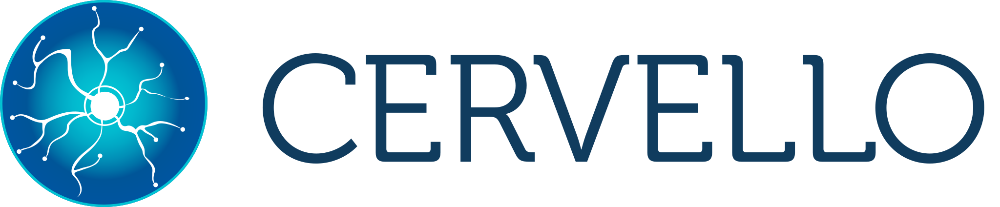
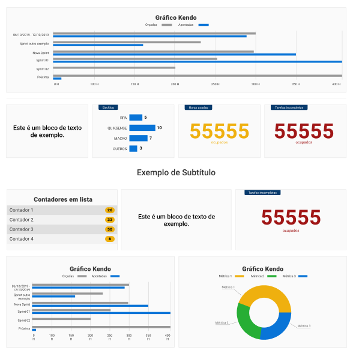
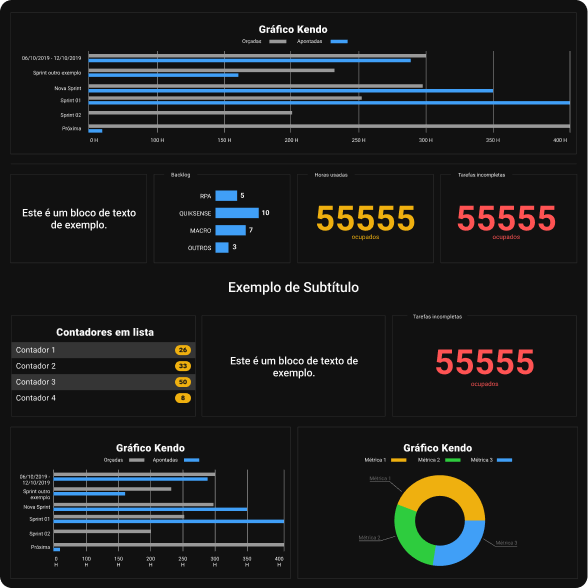
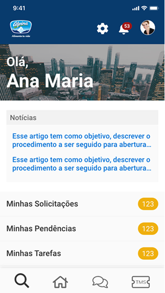
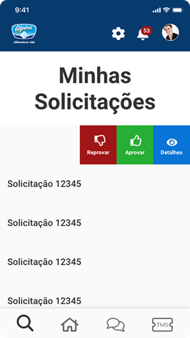
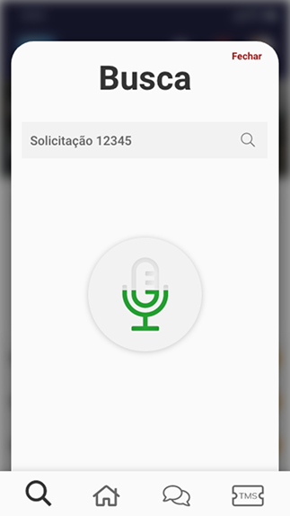

03 / Cervello BPMS
Cervello BPMS
O que a equipe de suporte usa todos os dias numa plataforma de chamados?

Contexto e meu papel
Em 2018, entrei no Cervello, plataforma de TI e chamados cuja interface acumulava controles e inconsistências. Durante aproximadamente quatro anos, fui o único designer, atuando em pesquisa qualitativa, prototipação, Design System e implementação em HTML, CSS e SCSS.
Com o PM, priorizei login, home e atendimento, seguindo as tarefas mais frequentes do suporte.
Personalização com consistência
Cada cliente podia usar as cores da sua marca. Defini combinações de texto e fundo e gerei variações por código. Mantive fixas as cores de sucesso, alerta e erro para que a equipe pudesse reconhecer esses sinais em qualquer tema.
Organizei tipografia, espaçamentos e ações. Na home personalizável, propus uma biblioteca de imagens royalty free para facilitar a configuração dos atalhos.
Também reorganizei telas fragmentadas em abas. Para acessar páginas mais profundas, propus uma busca universal; o PM complementou a orientação com breadcrumbs. As propostas eram discutidas com usuários em conversas informais apoiadas por protótipos.


Do sistema visual ao código
Os módulos compartilhavam fundamentos, com controles próprios quando necessário. Sem um desenvolvedor front-end dedicado, substituí grande parte do Bootstrap por uma base em SCSS organizada com BEM, reutilizando componentes e gerando opções de cor.
Nos dashboards, respeitei a biblioteca JavaScript existente. No aplicativo, defendi menor prioridade para configurar a home e criar dashboards: eram tarefas de implantação, pouco frequentes no suporte.
Essa proximidade entre desenho e implementação permitia que os padrões definidos nas telas fossem incorporados aos estilos utilizados pelos diferentes módulos da plataforma.
Revisava as entregas e mantinha o protótipo sincronizado com o produto.



Resultados e aprendizado
Usuários envolvidos nas validações, PM e comercial avaliaram positivamente o redesign. A personalização facilitava apresentar a plataforma a diferentes clientes.
Não havia telemetria sistemática. Novos contratos foram assinados, mas não tenho dados para atribuí-los ao redesign.
O trabalho deixou uma experiência reorganizada e componentes reutilizáveis. Hoje, usaria esses aprendizados para influenciar mais a direção do produto.